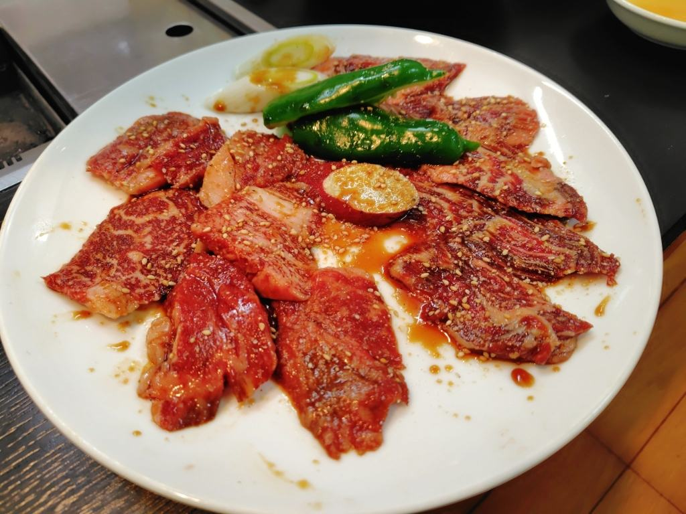
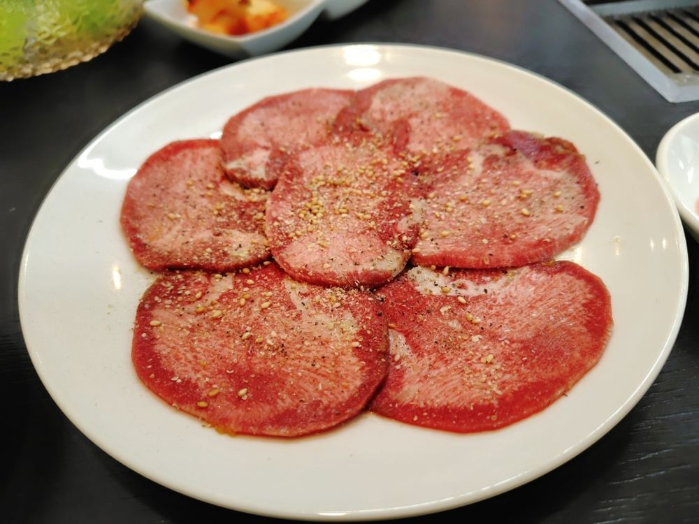
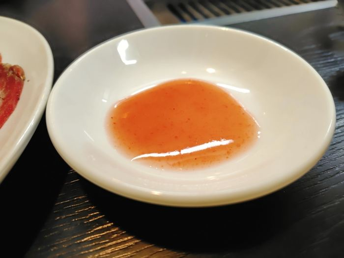
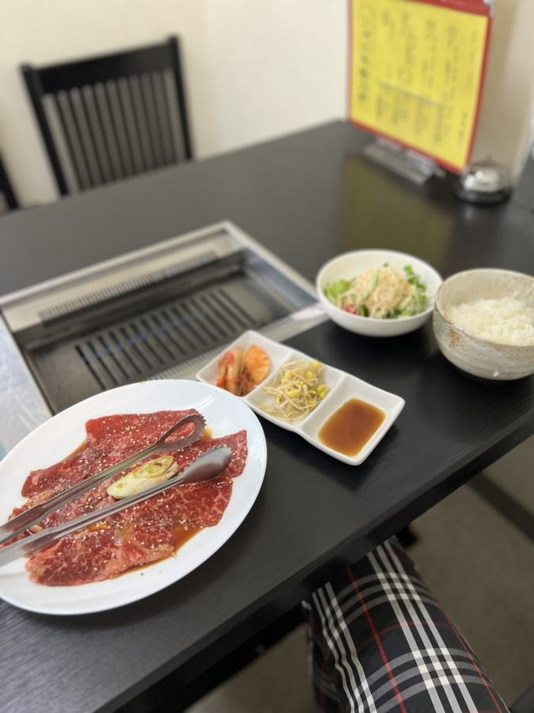
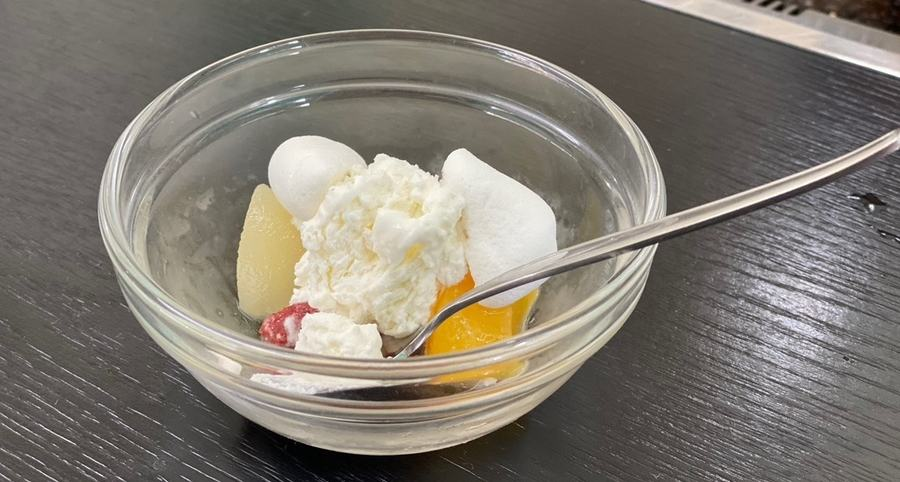
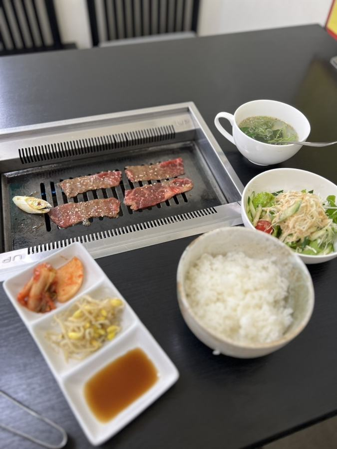

塩タンには、当店の梅ダレを添えてお出ししております。卓ごとのロースターで、じっくりと焼き上げてお楽しみください。
厚みのある塩タンに、当店だけの梅ダレを添えてお出ししております。すっきりとした酸味が、お肉の脂の甘みを引き立てます。
卓ごとにロースターをご用意しております。焼き加減はお好みで、ゆっくりとお楽しみください。黒を基調とした落ち着いた卓で、お食事に集中していただけます。




黒を基調とした卓に、ロースターを組み込んでおります。卓ごとの火加減で、焼き加減はお好みのままお楽しみいただけます。

| 住所 | 〒329-0111 栃木県下都賀郡野木町丸林223-13 野木駅東口から徒歩9分 |
|---|---|
| 電話 | 0280-57-0070 |
| 営業時間 | 17:30〜22:00（土曜日は11:30〜14:00の昼の部もございます） 土曜日の昼の部はお電話でご確認ください。 |
| 定休日 | 月曜日 |
| 駐車場 | あり |
| 喫煙 | 店内は全席喫煙可でございます。お子様連れ・お席のご希望はお電話でご相談ください |